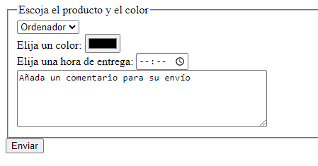

Crear el siguiente formulario
Para esta actividad, le pedimos:
- Cree un formulario de recepción de un producto. Dichos productos serán: ordenador, bicicleta y monopatín.
- Además, cree un espacio en el que el usuario pueda escoger un color y la hora de entrega.
- Añada un área de texto para que el usuario pueda dejar un comentario.
El resultado deberá ser el siguiente:
Formulario
Actividad asociada al CE2.2
Explicación de las etiquetas y atributos utilizados:
- <form>: etiqueta que define el inicio del formulario y sus atributos, en este caso, 'action' (indica la URL a la que se enviarán los datos del formulario) y 'method' (indica el método HTTP que se utilizará para enviar los datos, en este caso, 'POST').
- <label>: etiqueta utilizada para asociar un texto con un control de formulario, su atributo 'for' se utiliza para indicar el id del control al que hace referencia.
- <select>: etiqueta utilizada para crear una lista desplegable, su atributo 'name' se utiliza para definir el nombre del control de formulario y 'required' indica que es obligatorio seleccionar una opción.
- <option>: etiqueta utilizada para definir una opción dentro de un control '<select>', su atributo 'value' se utiliza para definir el valor asociado a la opción y su contenido se utiliza para mostrar el texto de la opción.
- <input>: etiqueta utilizada para crear varios tipos de controles de formulario. Los atributos comunes a todos los controles son 'type' (que indica el tipo de control) y 'name' (que indica el nombre del control de formulario). Los atributos utilizados en este formulario son:
- type="color": crea un selector de color.
- type="time": crea un control para seleccionar la hora.
- type="submit": crea un botón para enviar el formulario.
- required: indica que el campo es obligatorio.
- id: se utiliza para asociar el control con una etiqueta '<label>'.
- <textarea>: etiqueta utilizada para crear un área de texto para que el usuario pueda escribir comentarios. Su atributo 'name' se utiliza para definir el nombre del control de formulario.